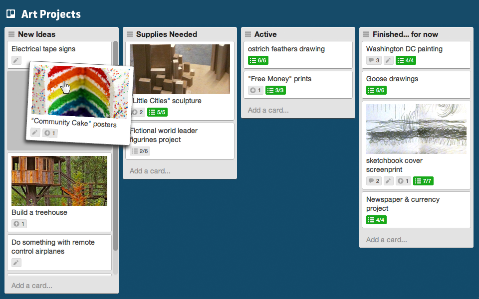
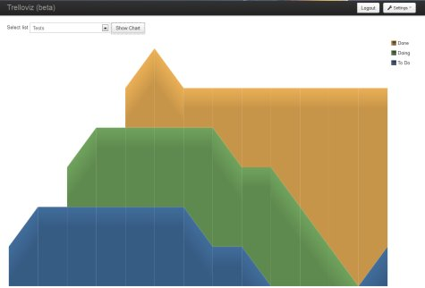

Created by Martin W. Kirst / @nitram509
Visualization Tool
Lists and cards

www.trello.com
Cumulative Flow Diagram

Feedback: Martin W. Kirst / @nitram509
Web: http://nitram509.github.com/trelloviz/